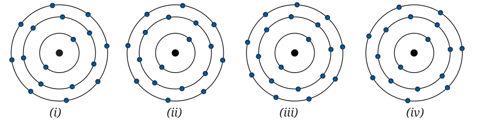

A student burns 10 g of ethanol in an open beaker. After the reaction, no residue is left in the beaker. Does this mean the Law of Conservation of Mass is violated? Explain.
Key ideaLaw of Conservation of Mass: total mass of reactants = total mass of products
Step 1
Ethanol burns by reacting with oxygen from the air
Step 2
The products are carbon dioxide and water vapour, which are gases and escape from the open beaker
Step 3
Mass of ethanol + mass of oxygen used = mass of CO2 + mass of water vapour formed
Step 4
If the same reaction is done in a closed container, the total mass before and after is the same
AnswerNo, the law is not violated; the products are gases that escaped from the open beaker
2
When 20 g of hydrogen reacts completely with 160 g of oxygen, how much water is formed according to the Law of Conservation of Mass?
GivenHydrogen = 20 g, oxygen = 160 g (react completely)
To findMass of water
Key ideaMass of reactants = mass of products
Step 1
Mass of water = mass of hydrogen + mass of oxygen
Step 2
= 20 g + 160 g = 180 g
Answer180 g of water is formed
💡 20 : 160 = 1 : 8, which is the fixed mass ratio of H : O in water.
3
A compound consists of 40% sulfur and 60% oxygen by mass. In a sample of the same compound containing 20 g of sulfur, what mass of oxygen must be present to satisfy the Law of Constant Proportions?
GivenS : O = 40 : 60 by mass, sulfur in sample = 20 g
To findMass of oxygen
Key ideaLaw of Constant Proportions: the mass ratio of elements in a compound is fixed
Step 1
S : O = 40 : 60 = 2 : 3
Step 2
mass of O20 g = 6040
Step 3
Mass of O = 6040 × 20 g = 30 g
Answer30 g of oxygen
4
Carbon monoxide (CO) contains carbon and oxygen in the mass ratio 3 : 4. How much oxygen will combine with 9 g of carbon to form carbon monoxide?
GivenC : O = 3 : 4, carbon = 9 g
To findMass of oxygen
Step 1
mass of Omass of C = 43
Step 2
Mass of O = 43 × 9 g = 12 g
Answer12 g of oxygen
5
The Law of Definite Proportions holds true for compounds but not for mixtures. Give reason.
Step 1
In a compound, elements are chemically combined in a fixed ratio by mass (water always has H : O = 1 : 8)
Step 2
In a mixture, the components are only physically mixed and can be present in any ratio (salt solution can be weak or strong)
AnswerA mixture has no fixed composition, so the law cannot apply to it
6
Students X and Y both prepared an oxide of copper by combining copper and oxygen in the ratios 4 : 1 and 8 : 2 respectively. Do their results justify the Law of Constant Proportions? Explain.
Step 1
X: Cu : O = 4 : 1
Step 2
Y: Cu : O = 8 : 2 = 4 : 1 (divide by 2)
Step 3
Both samples of the same compound have the same mass ratio
AnswerYes, both have Cu : O = 4 : 1, which supports the law
7
Assertion (A): 2 g of hydrogen combines with 16 g of oxygen to form 18 g of water. Reason (R): According to Dalton’s Atomic Theory, atoms combine in a simple whole number ratio by mass to form compounds. Choose: (i) both true, R explains A (ii) both true, R does not explain A (iii) A true, R false (iv) A false, R true.
Step 1
A is true: 2 g + 16 g = 18 g (Law of Conservation of Mass)
Step 2
R is a true postulate of Dalton’s theory: atoms combine in simple whole number ratios
Step 3
But A is about the total mass staying the same, which is explained by conservation of mass (atoms are not created or destroyed), not by the ratio rule
Answer(ii) Both A and R are true, but R is not the correct explanation of A
Pause and Ponder: Covalent bonds
4 questions
8
Nitrogen has five valence electrons. Draw the structure of the nitrogen molecule (N2).
Key ideaAtoms share electrons to complete an octet
Step 1
N has configuration 2, 5, so it needs 3 more electrons
Step 2
Each N atom shares 3 electrons with the other N atom
Step 3
This makes 3 shared pairs: a triple bond. Each N also keeps 1 lone pair
Step 4
Drawing: two overlapping outer shells with 6 electrons (3 pairs) in the overlap
AnswerN≡N (triple covalent bond); each N gets 8 electrons
9
The atomic number of fluorine is 9. Explain the formation of the fluorine molecule (F2).
Step 1
F (Z = 9) has configuration 2, 7, so it needs 1 electron
Step 2
Two F atoms each share 1 electron, making one shared pair
Step 3
Now both atoms have 8 electrons in the outer shell (like Cl2)
AnswerF—F, a single covalent bond
10
Show the formation of the following molecules: (i) carbon dioxide (CO2) (ii) hydrogen sulfide (H2S) (iii) ammonia (NH3).
(i) CO2
Step 1
C is 2, 4 (needs 4); each O is 2, 6 (needs 2)
Step 2
C shares 2 pairs with each O
AnswerO=C=O (two double bonds)
(ii) H2S
Step 1
S is 2, 8, 6 (needs 2); each H needs 1
Step 2
S shares one pair with each of two H atoms
AnswerH—S—H (two single bonds, like water)
(iii) NH3
Step 1
N is 2, 5 (needs 3); each H needs 1
Step 2
N shares one pair with each of three H atoms and keeps one lone pair
AnswerThree N—H single bonds
11
Neon (atomic number 10) neither transfers nor shares its valence electrons. Explain.
Step 1
Neon has configuration 2, 8
Step 2
Its outermost shell already has a complete octet, so it is already stable
AnswerNeon has no need to lose, gain or share electrons, so it exists as single atoms
Pause and Ponder: Ionic bonds
4 questions
12
What kind of ion will oxygen (O) form?
Step 1
O (Z = 8) has configuration 2, 6
Step 2
It is easier to gain 2 electrons than to lose 6
Step 3
After gaining 2 electrons it has 8 electrons and 10 electrons in total against 8 protons
AnswerAn anion, O2− (oxide ion)
13
Fill in the blanks: Magnesium atom can give two electrons to become Mg2+. However, chlorine can take only one electron to become ____. Now, ____ ion of magnesium and ____ ions of chlorine combine to give magnesium chloride.
Step 1
Cl gains 1 electron → Cl−
Step 2
Mg gives 2 electrons, but one Cl takes only 1, so 2 Cl atoms are needed
Step 3
Mg2+ + 2Cl− → MgCl2
AnswerCl−; one; two
14
Show the formation of cations of potassium (K) and calcium (Ca), and of their corresponding chlorides.
Write the formula for: (i) sodium hydrogencarbonate (ii) sulfur dioxide (iii) ferric chloride (iv) cuprous oxide.
Key ideaCriss-cross the valencies of the ions
Step 1
(i) Na+ and HCO3− → NaHCO3
Step 2
(ii) S with 2 O → SO2
Step 3
(iii) Ferric = Fe3+, Cl− → FeCl3
Step 4
(iv) Cuprous = Cu+, O2− → Cu2O
AnswerNaHCO3, SO2, FeCl3, Cu2O
18
Write the formulae for the compounds formed from the ions: (i) Fe3+ and OH− (ii) K+ and CO32−
Step 1
(i) Fe 3, OH 1 → criss-cross: Fe1(OH)3
Step 2
(ii) K 1, CO3 2 → K2(CO3)1
Answer(i) Fe(OH)3 (ii) K2CO3
19
What type of chemical bond is present in a solid compound that does not conduct electricity in the solid state but conducts when dissolved in water?
Step 1
Conduction needs charged particles that can move
Step 2
In the solid, ions are fixed in the crystal; in water they become free to move
AnswerAn ionic bond
20
Metal M, with two electrons in its valence shell (M shell), reacts with oxygen to form a compound that is slightly soluble in water. Predict its (i) formula (ii) type of bond (iii) electrical conductivity of its aqueous solution.
Step 1
M shell is the 3rd shell, so M is 2, 8, 2: magnesium. It forms M2+; oxygen forms O2−
Step 2
(i) Charges balance 1 : 1 → MO (MgO)
Step 3
(ii) Electrons are transferred from metal to non-metal → ionic bond
Step 4
(iii) The dissolved part gives free ions, so the solution conducts (weakly, as it is only slightly soluble)
Answer(i) MO (ii) ionic (iii) conducts electricity
Pause and Ponder: Molecular and formula unit mass
4 questions
21
Find the molecular mass of nitric acid (HNO3). (H = 1 u, N = 14 u, O = 16 u)
Key ideaMolecular mass = sum of the atomic masses of all atoms in the molecule
Step 1
H: 1 × 1 = 1 u
Step 2
N: 1 × 14 = 14 u
Step 3
O: 3 × 16 = 48 u
Step 4
Total = 1 + 14 + 48 = 63 u
AnswerMolecular mass of HNO3 = 63 u
22
Find the molecular mass of methane (CH4). (C = 12 u, H = 1 u)
Step 1
C: 1 × 12 = 12 u
Step 2
H: 4 × 1 = 4 u
Step 3
Total = 12 + 4 = 16 u
Answer16 u
23
Find the formula unit mass of potassium chloride (KCl). (K = 39 u, Cl = 35.5 u)
Step 1
39 + 35.5 = 74.5 u
Answer74.5 u
24
Find the formula unit mass of magnesium hydroxide, Mg(OH)2. (Mg = 24 u, O = 16 u, H = 1 u)
Step 1
Mg: 1 × 24 = 24 u
Step 2
(OH)2: 2 × (16 + 1) = 34 u
Step 3
Total = 24 + 34 = 58 u
Answer58 u
Revise, Reflect, Refine
15 questions
1
Element A has one electron in its third shell. Element B has six electrons in its second shell. (i) How many electrons does A tend to give or take to become stable? (ii) What kind of ion would it form? (iii) How many electrons does B tend to give or take? (iv) What kind of ion would it form? (v) If A and B combine, what kind of bond is formed? (vi) What is the formula of the compound?
An element X has six electrons in its outer shell and forms a diatomic molecule. (i) Why? (ii) What kind of bond? (iii) Draw the structure. (iv) Element Y has two electrons in its second shell. Draw the structure of the compound X forms with Y.
Step 1
(i) X needs 2 more electrons for an octet. Two X atoms share 2 electrons each and both become stable as X2
Step 2
(ii) Sharing gives a covalent bond (a double bond)
Step 3
(iii) X=X, two shared pairs, like O2
Step 4
(iv) Y is 2, 2: it gives its 2 valence electrons to X, forming Y2+ and X2−
Answer(i) to complete the octet (ii) covalent (double) bond (iii) X=X (iv) YX, drawn as [Y]2+ [X]2− with 8 electrons around X
3
You want to design an ionic compound where the total positive charge is 6+ and the total negative charge is 6−. Which combination is correct? (i) 2 Al3+ and 3 Cl− (ii) 3 Mg2+ and 1 PO43− (iii) 2 Fe3+ and 3 O2− (iv) 3 Ca2+ and 2 SO42−
Step 1
(i) 2 × 3 = 6+, but 3 × 1 = 3− ✘
Step 2
(ii) 3 × 2 = 6+, but 1 × 3 = 3− ✘
Step 3
(iii) 2 × 3 = 6+ and 3 × 2 = 6− ✔
Step 4
(iv) 3 × 2 = 6+, but 2 × 2 = 4− ✘
Answer(iii) 2 Fe3+ and 3 O2− (Fe2O3)
4
Choose the correct statement(s) and correct the false ones: (i) Elements are made up of molecules and compounds are made up of atoms. (ii) The molecule of a compound is always made up of two or more atoms of the same kind. (iii) One molecule of nitrogen gas contains three nitrogen atoms. (iv) Water is made of two hydrogen atoms covalently bonded with one oxygen atom.
Step 1
(i) False. Elements are made of one kind of atom (single atoms or molecules like O2); compounds are made of molecules or ions of different elements
Step 2
(ii) False. A molecule of a compound always has atoms of two or more different kinds
Step 3
(iii) False. A nitrogen molecule (N2) has two atoms
Step 4
(iv) True
AnswerOnly (iv) is correct
5
Write the chemical formulae: (i) aluminium nitrate (ii) calcium oxide (iii) ferric oxide.
Step 1
(i) Al3+, NO3− → Al(NO3)3
Step 2
(ii) Ca2+, O2− → CaO
Step 3
(iii) Fe3+, O2− → Fe2O3
AnswerAl(NO3)3, CaO, Fe2O3
6
Write the formulae of the compounds formed from: (i) Ca2+ and Br− (ii) Al3+ and CO32− (iii) K+ and SO42− (iv) NH4+ and Cl−
Key ideaCriss-cross the charges and simplify
Answer(i) CaBr2 (ii) Al2(CO3)3 (iii) K2SO4 (iv) NH4Cl
7
Which of the diagrams in Fig. 9.18 correctly represents the Cl− ion? (Atomic number of chlorine = 17)

Fig. 9.18
Step 1
Cl has 17 electrons; Cl− has 17 + 1 = 18 electrons, arranged 2, 8, 8
Step 2
Count the dots: (i) 2, 7, 8 (ii) 2, 8, 8 (iii) 2, 8, 9 (iv) 2, 8, 7 (a neutral Cl atom)
Answer(ii)
8
Determine the formula unit mass of (i) ammonium nitrate NH4NO3 (ii) phosphoric acid H3PO4 (iii) sodium hydrogencarbonate NaHCO3. (H 1, N 14, O 16, P 31, Na 23, C 12 u)
(i) NH4NO3
Step 1
N: 2 × 14 = 28; H: 4 × 1 = 4; O: 3 × 16 = 48
Answer28 + 4 + 48 = 80 u
(ii) H3PO4
Step 1
H: 3 × 1 = 3; P: 31; O: 4 × 16 = 64
Answer3 + 31 + 64 = 98 u
(iii) NaHCO3
Step 1
Na 23; H 1; C 12; O: 3 × 16 = 48
Answer23 + 1 + 12 + 48 = 84 u
9
Write the formulae for the compounds formed by: (i) magnesium and nitrogen (ii) lithium and nitrogen (iii) sodium and sulfur (iv) aluminium and oxygen.
Step 1
(i) Mg2+, N3− → Mg3N2
Step 2
(ii) Li+, N3− → Li3N
Step 3
(iii) Na+, S2− → Na2S
Step 4
(iv) Al3+, O2− → Al2O3
AnswerMg3N2, Li3N, Na2S, Al2O3
10
Complete Table 9.3 by writing the formulae of compounds formed by the cations NH4+, Li+, Al3+, Cu2+ with the anions NO3−, SO42−, PO43−.
Step 1
Criss-cross the charges for each pair and simplify
Answer
NO3−
SO42−
PO43−
NH4+
NH4NO3
(NH4)2SO4
(NH4)3PO4
Li+
LiNO3
Li2SO4
Li3PO4
Al3+
Al(NO3)3
Al2(SO4)3
AlPO4
Cu2+
Cu(NO3)2
CuSO4
Cu3(PO4)2
11
5.3 g of sodium carbonate and 6.0 g of acetic acid react to produce 2.2 g of carbon dioxide, 0.9 g of water and 8.2 g of sodium acetate. Verify whether the Law of Conservation of Mass is valid.
GivenReactants: 5.3 g + 6.0 g; products: 2.2 g + 0.9 g + 8.2 g
Step 1
Total mass of reactants = 5.3 + 6.0 = 11.3 g
Step 2
Total mass of products = 2.2 + 0.9 + 8.2 = 11.3 g
Step 3
Mass of reactants = mass of products
AnswerYes, the law is valid (11.3 g = 11.3 g)
12
A species has 11 protons, 12 neutrons and 10 electrons. (i) What is its atomic number and mass number? (ii) Is it neutral, a cation or an anion? (iii) Write its electronic configuration. (iv) Name the species.
Step 1
(i) Atomic number = protons = 11; mass number = 11 + 12 = 23
Step 2
(ii) 11 positive and 10 negative charges: net +1, so a cation
Step 3
(iii) 10 electrons: 2, 8
Step 4
(iv) Z = 11 is sodium
Answer(i) 11 and 23 (ii) cation (iii) 2, 8 (iv) sodium ion, Na+
13
Two elements A (2, 8, 5) and B (2, 8, 7). (i) Which is more reactive? (ii) Will they form ionic or covalent bonds? Explain. (iii) Predict the formula of the compound.
Step 1
A is phosphorus, B is chlorine
Step 2
(i) B needs only 1 electron to complete its octet, A needs 3, so B is more reactive
Step 3
(ii) Both are non-metals that need electrons, so neither gives electrons away; they share electrons: covalent bonds
Step 4
(iii) A shares one electron with each of three B atoms
Answer(i) B (ii) covalent (iii) AB3 (like PCl3)
14
Assertion (A): Copper sulfate conducts electricity in the molten state but not in the solid state. Reason (R): Copper and sulfate ions are fixed in the lattice in the molten state, while in the solid state they can move freely.
Step 1
A is true: molten ionic compounds conduct
Step 2
R is false: it is the other way round. Ions are fixed in the solid and free to move when molten
Answer(iii) A is true, but R is false
15
The species 27Al, 80Br− and 201Hg2+ have 13, 35 and 80 protons. How many electrons and neutrons do they have?
Key ideaNeutrons = mass number − protons; electrons = protons − charge
Made by MT Classes, S.K. Nagar, Motihari for Class 9 CBSE students. Questions are from the NCERT Exploration textbook; solutions are written by MT Classes. Back to the chapter notes · All notes